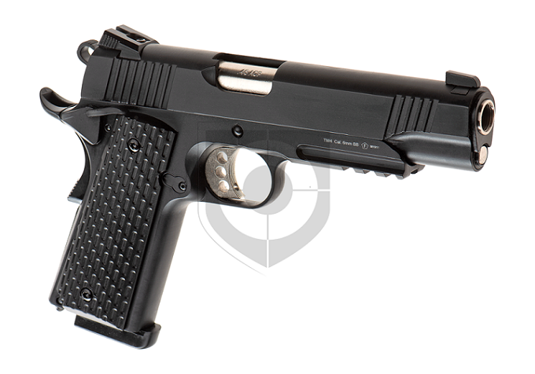
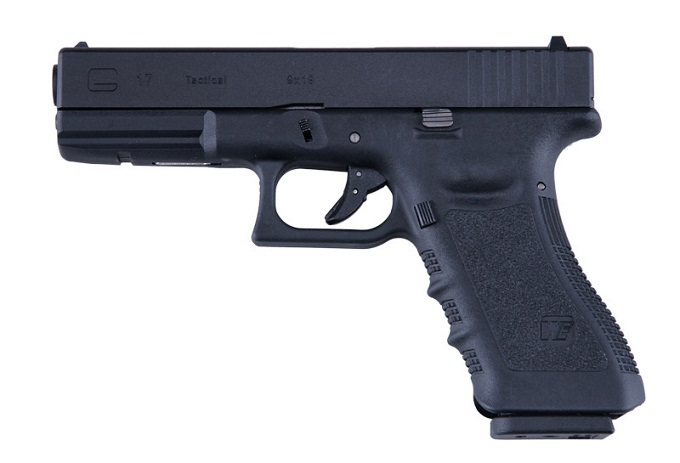

Пистолети (реплики) за airsoft. Какво е най- важното след закупуването на газов пистолет? Най- важното е поддръжката при газовите пистолети. Ако не бъдат смазвани редовно, много бързо започват да се чупят.
Смазването става само със силиконова смазка за еърсофт. След закупуване на даден пистолет ще ви бъде показано как правилно да го смазвате и поддържате.
Едни от най-разпространените реплики са тези на Colt1911 и Glock17.  Най-предпочитаните марки са WE, Umarex и KJWorks. 